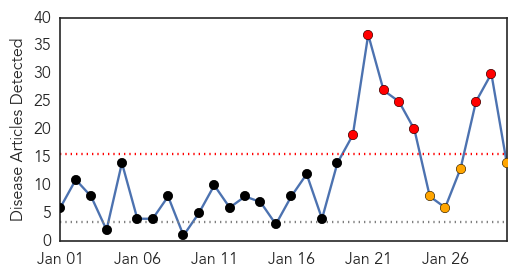
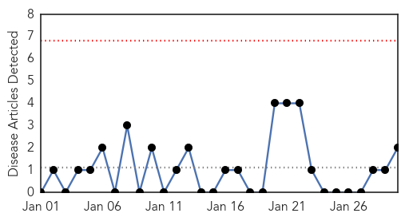

Swine Flu
30-Day Web Trend
7 alerts, 4 warnings

30-Day Twitter Trend
0 alerts, 0 warnings

Article Locations

Article Confidences

Top Articles:
- 0.999
- Swine flu scare in Lucknow
- 0.999
- 2 more succumb in Andhra Pradesh
- 0.999
- Swine flu: Two more succumb in Andhra Pradesh
- 0.998
- Another suspected swine flu case in city
- 0.997
- Separate OPDs for swine flu patients in Rajasthan
- 0.996
- Two swine flu deaths, 24 fresh cases reported in Andhra Pradesh
- 0.993
- Give Enough Publicity To Swine Flu: Ministers
- 0.987
- Swine flu claims eight lives in Haryana; 47 cases confirmed
- 0.979
- Medicos asked to adhere to SUP on swine flu
- 0.964
- 2 suspected swine flu deaths in Indore; new case in Bhopal
- 0.894
- Weather conditions in MP favourable for swine flu outbreak : MeT
- 0.810
- Chief health officer Rosemary Lester to retire
- 0.678
- Hospital staff to be trained
- 0.543
- Victorian chief health officer Rosemary Lester to retire
Top Tweets:
-
No tweets found for Jan 30, 2015
MERS
30-Day Web Trend
0 alerts, 0 warnings

30-Day Twitter Trend
0 alerts, 0 warnings

Article Locations

Article Confidences

Top Articles:
Top Tweets:
- 0.620
- Update on Middle East Respiratory Syndrome Coronavirus (MERS-CoV) infection for clinicians & public http://t.co/wyE3Ac7QxY